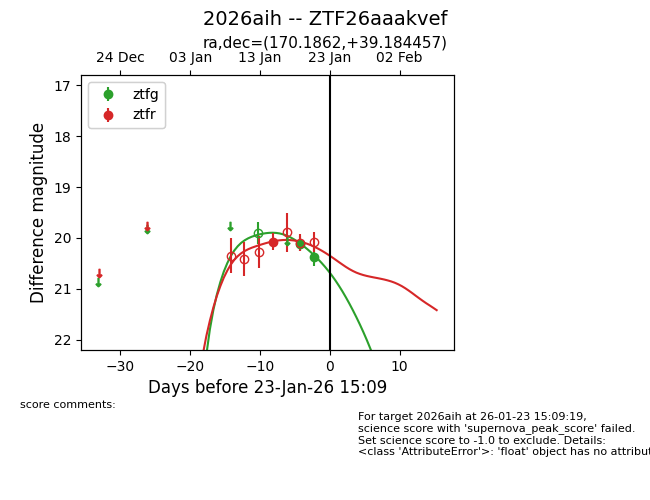
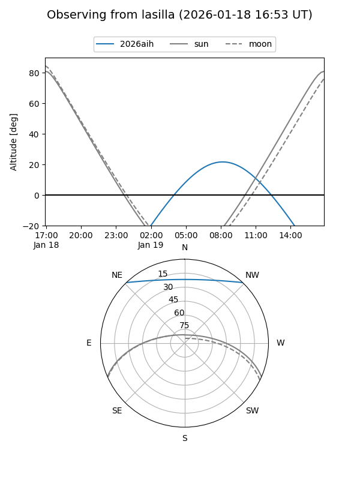
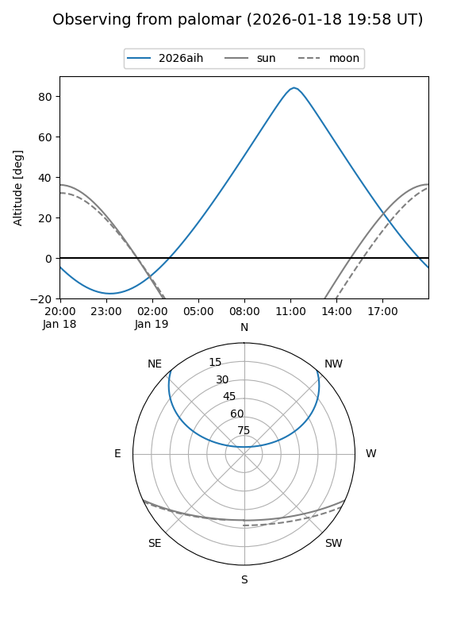
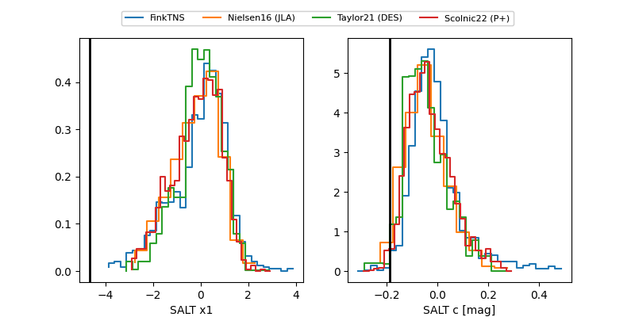

2026aih
Target 2026aih at 2026-01-15 19:05
Aliases and brokers:
FINK: link
Lasair: link
ALeRCE: link
TNS: link
YSE: link
alt names
ZTF26aaakvef (ztf,fink_ztf)
2026aih (tns,yse)
Coordinates:
equatorial (ra, dec) = 170.1862,+39.18446
equatorial (HMS+DMS) = 11:20:44.69,+39:11:04.05
galactic (l, b) = (174.6063,+67.61274)
Flags:
Photometry:
last ztfr=20.07
1 ztfr detections
Lightcurve

Visibility


Additional plots
